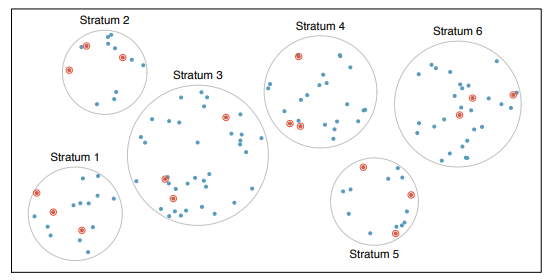

8 Drawing statistical conclusions
8.1 Populations, samples, and collecting data
The first step in conducting research is to identify topics or questions that are to be investigated. However, it is important to consider how data are collected so that they are reliable and help achieve the research goals. Important concepts related to data collection:
Population: The entire collection of objects or individuals that you want to study.
Individual, case, or subject : A person or an object that is a member of the population being studied
Sample: A part of the population that is selected for the study.
If the goal is to draw conclusions about the population of interest, rather than just the cases or subjects in the sample, a representative sample obtained through random sampling is required.
Common sampling techniques include:
- Simple random sampling (SRS) – Randomly and independently select cases from the population, each case is equally likely to be selected.
- Stratified sampling – Population is divided into groups called strata. The strata are homogeneous and an SRS is taken from each stratum.

- Cluster sampling – Population is divided into groups called clusters that are not necessarily homogeneous. A random sample of clusters is selected and all observations from each sampled cluster are used.
A note about the size of the sample
Common misconception: If the size of a sample is relatively small compared to the population size, the sample cannot possibly accurately reflect the population. Not true! The random selection process allows you to be confident that the resulting sample will reflect the population, even when the sample consists of only a small fraction of the population.
Statistical inferential methods always account for the sample size. The larger the sample size, the more information is available, which results in a more precise answer compared to a smaller sample size with less information.
8.2 Relationships among variables
When two variables show some relationship or connection with one another, they are called associated variables. If it is believed that a variable might affect or be associated with changes in the another variable, then in such cases, the first variable is designated the explanatory variable and the second the response variable.
For example, can the height of a tree provide a reasonable estimate of its volume? Do certain types of diets significantly affect the early growth of chicks? Such questions can be explored using numerical and graphical summaries of data. However, whether the trends or patterns seen in these graphs can be attributed mostly to sampling, natural variability, or random error is uncertain.
Note
Recall the case study given in Chapter 1 This data set has three variables (two categorical and one numerical variable): level of exposure of light intensity (Light), turbidity level exposure (Turbidity), and the percentage of larvae that survived (Survival). The questions posed where: Do levels of light intensity (measured in \(\mu mol/m^2/s\)) affect survival rates of early-stage larvae early-stage Delta smelt larvae? What about levels of turbidity (measures in nephelometric turbidity units (NTUs))? Since we would like to know whether these factor variables might affect the percentage of larvae that survived, Light and Turbidity are explanatory variables and Survival is the response variable.
Two common ways to visualize the relationship between variables are scatter plots and box plots. In R, we create these plots using the xyplot() and bwplot() functions, respectively. Below are examples of these plots being used to explore the relationships between variables in two different datasets. Both of these functions are also discussed in Chapter 10.
Code
# Data set `ChickWeight' contains variables weight and Diet
# It is a built-in data set. bwplot() creates a boxplot
# for a categorical variable (Diet) and a numerical
# variable (weight).
bwplot( weight ~ Diet ,
data= ChickWeight ,
ylab= "Chick weight (gm)" ,
xlab= "Diet type" )The graphical summaries above suggest that chicks on diets 3 and 4 tend to have higher weights than those on diets 1 or 2 in this sample. However, inferential methods would be necessary to determine whether these differences between diets are due to natural or sampling variability. The same goes for the trend seen in the scatter plot.
8.3 Basics of experimental design
The following concepts of experimental design enable researchers to conclude that differences in the observed response data are likely due by the treatments and not reasonably attributable to only chance:
Randomization: Researchers randomly assign experiment units into treatment or conditions (also called randomized group assignment). This ensures that an experiment does not favor one experimental condition over any other and tries to create “equivalent” experimental groups in the sense that the treatment groups are as much alike as possible.
Replication: The more experimental data collected, the more precise our estimate of the effect of the treatment on the response.
Controlling: Researchers assign treatments to cases, and attempt their best to control any other differences in the groups.
Blocking: A technique to include another factor variable that is not of primary interest in the experiment because it is believed it contributes to variation in the response. The experimental units may be grouped or blocked based on this factor variable. Randomization is then applied within each block to the treatment conditions. Blocks should be homogeneous.
For those interested in learning more about the design and analysis of experiments, Math 4220 is an applied course that explores various strategies for constructing and executing experiments that can be applied across the social, physical, and life sciences. This course enhances the ability of one to design experiments, carry them out, and analyze the resulting data.
8.4 Scope of inference
The scope of inference of a study (from a statistician’s perspective) addresses two questions:
Do these results provide evidence for a causal relationship? (cause-and-effect or causation)
Can the results of the study be generalized to a population? (generalizability)
One can only establish if changes in the explanatory variable cause changes in the response variable through a randomized experiment. The answer to the second question is provided by the sampling method used to obtain the data. If the sample was randomly selected, then results from a study can be reasonably generalize to the population from which the sample was taken. In terms of a randomized experiment, the same applies to the treatments considered. Otherwise, the results can not be generalized to a population.
Note
Recall the case study given in Section 1.1. The treatments (low, medium, and high light intensities) were imposed on the subjects (early-stage Delta smelt larvae), but the treatment levels were not randomly assigned to the experimental units. Therefore, results from the study can not say whether changes in light intensity causes changes in survival rates. While there is an association between these variables, other possible explanation may exist for this relationship.
Furthermore, since the fish were not randomly selected for the study from some larger population, nor were the light intensities randomly selected, any conclusions from the study apply only to the subjects in the sample and the treatments considered. Therefore, the findings cannot be generalized to a larger population of fish or light intensity in general.